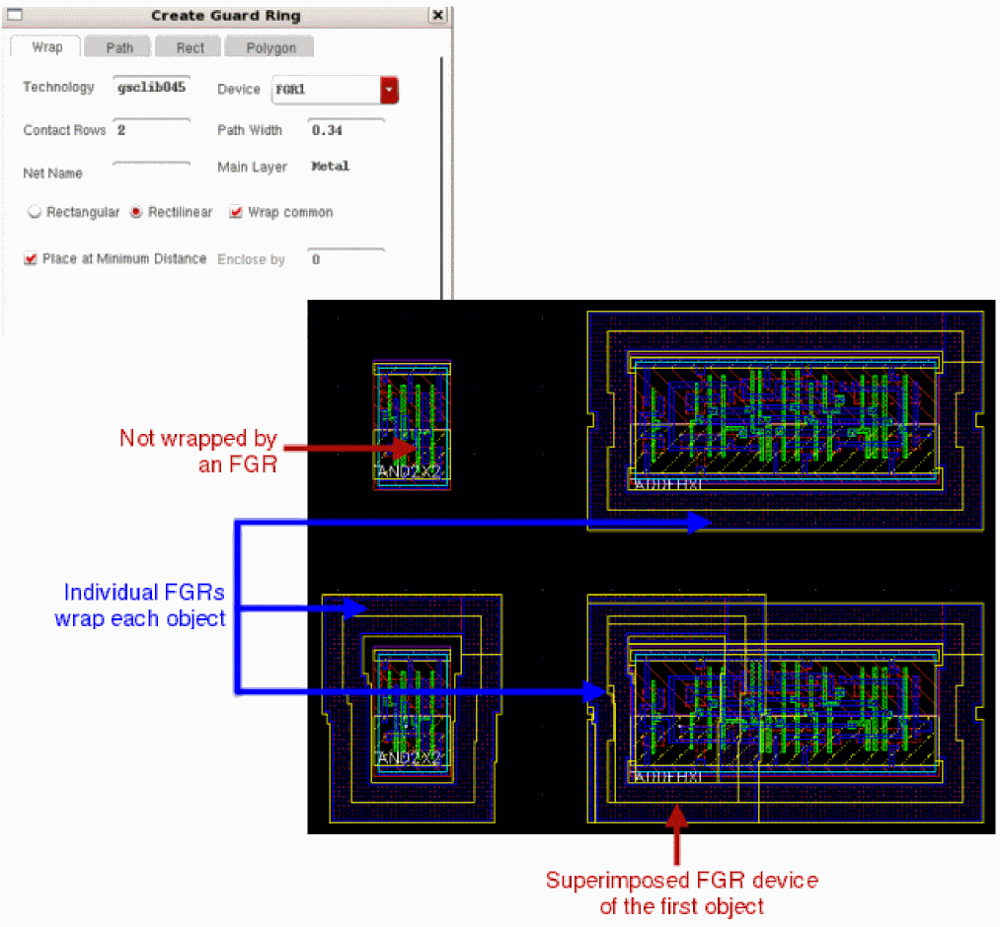

Virtuoso Fluid Guard Ring
This document describes the known issues with Virtuoso® Fluid Guard Ring (FGR) in Virtuoso® Layout Suite L and suggests the workarounds for these issues. Each issue is identified by a Cadence Change Request (CCR) number.
Related Documentation
- Virtuoso Fluid Guard Ring User Guide
- Virtuoso Fluid Guard Ring Frequently Asked Questions
- Virtuoso Layout Suite L User Guide
- Virtuoso Layout Suite SKILL Reference
CCR 1186870: Issues seen while creating an FGR in Wrap mode with Wrap common and Rectilinear options selected
Description: The following issues have been observed when you create an FGR around a group of devices in Wrap mode with the Wrap common check box and Rectilinear radio button selected on the Create Guard Ring form:
- Individual FGR devices are generated for each object, instead of a common one to wrap all objects.
-
One of the objects is not surrounded by an FGR. The corresponding FGR device gets superimposed on the FGR wrapping another object (as shown in the image below).

Solution: There is no workaround available for using wrapping objects with a rectilinear shape. If the multiple objects need to be wrapped with a single FGR, on the Wrap tab in the Create Guard Ring form, select the Rectangle radio button along with the Wrap common check box.
CCR 1179693: Unable to rename a library that contains layouts with fluid guard ring instances that use the version management feature
Description: The version management feature prevents geometry changes in the existing fluid guard ring instances (provided the instances were either created or edited using a release of Virtuoso that includes version management). When you save a layout in which fluid guard ring instances exist, this feature writes the fluid guard ring Pcell submasters to the disk. These submasters are saved in the design library of the layout in which they are instantiated. Such submasters have the cell name defined in the format zzz_<FGR_device_name>. For example, submasters of a fluid guard ring device, fgr01, have the cell name, zzz_fgr01.
When you rename a library, Virtuoso does not update the library information on any version-managed fluid guard ring instances in it. However, Virtuoso should ideally update this information to the renamed library.
Solution: Copy the old library to a new one, update the references, and then delete the old library.
CCR 1082970: Corner contacts correctly adhering to the DRC rules also get removed while creating and editing a Fluid Guard Ring
Description: Virtuoso automatically removes corner cuts from Fluid Guard Ring instances that are design-rule correct and need not be removed.
Solution: There is no workaround available.
CCR 13627: Convert to Polygon option to put resulting points on grid
Description: When a path is drawn at 45 degrees, and you convert the path to a polygon, the coordinates of the resulting polygon might be off grid.
Solution: You could write a SKILL program to check for (and possibly correct) off grid coordinates after paths are converted to polygons.
CCR 7231: Converting a 45-degree path to polygon results in off grid
Description: When you draw a path at 45 degrees, then the resultant path is off-grid.
Solution: There is no workaround available.
Return to top